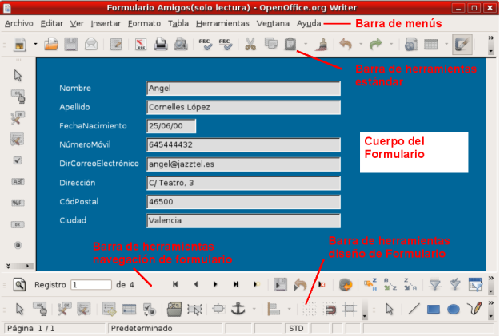

Para utilizar un formulario basta con colocarnos en él y utilizar los distintos campos que lo componen para añadir, modificar o visualizar los datos de nuestras tablas.
Además de los campos que muestra el cuerpo principal del formulario es importante que nos fijemos en los distintos elementos que componen la ventana de cualquier formulario como pueden ser las barras de herramientas con cuyos botones podremos realizar todo tipo de tareas dentro de un formulario. En la figura siguiente podemos ver una ventana de un formulario con la indicación de los diferentes elementos que lo integran.

La barra de herramientas Diseños de formularios sólo está activa cuando estamos editando un formulario o cuando lo estamos creando en modo diseño. Sus diferentes botones los veremos más adelante.
La barra de herramientas Navegación de formularios es la barra que tenemos activa cuando trabajamos con los datos en un formulario cualquiera y en ella encontramos botones para movernos por los diferentes registros, botones para filtrar los datos del formulario, botones para ordenar los registros por diferentes campos, etc.